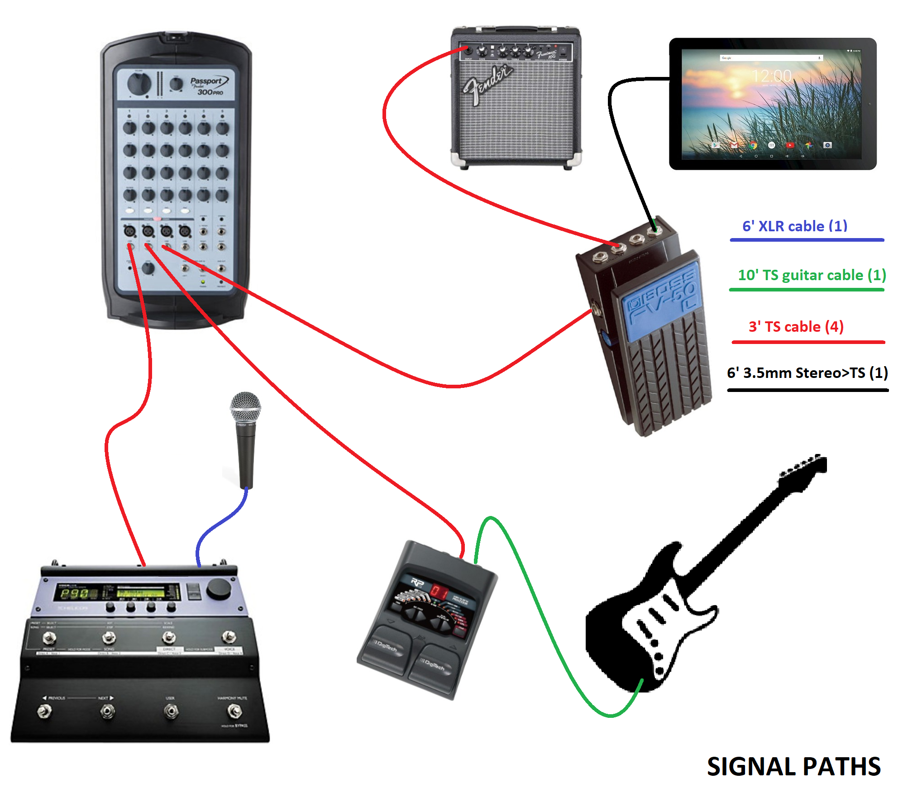

Boot the Tablet to this page
Place major 120v devices as shown...

Turn All Volumes and Power Swtches OFF
Set all tones/effects to default setting below
| PASSPORT SET UP |
| - |
Fred
Voice |
Fred
Guitar |
Back
Track |
open |
open |
open |
| Gain |
 |
 |
 |
|
|
|
| Treb |
 |
 |
|
|
|
|
| Bass |
 |
 |
|
|
|
|
| Rev |
|
 |
|
|
|
|
4) Plug in power chords & power strip (OFF) to 4 120v Items
5) Setup Microphone,Stand,Tablet & Battery
6) Place Guitar and Stand
7) Connect all Signal Cables as Shown

8) Turn on Power initiate first Song at default tablet volume
9) Adjust monitor volume with Pedal Maxed (70db @ Mic) then zero Pedal
10) Set the Passport MAIN Volume so Backtrack gets about 60db @ audience
12) TUNE GUITAR
13) Verify setup by playing a song
| Fred's Stratocaster SetUp |
| Lead |
Rhythm |
Picking |
Pedal
3 or 4 |
Pickup ooo2o |
Pedal
1 or 2 |
Pickup o4ooo |
Pedal
By Pass |
Pickup ooo2o |
Sound Check (Assumes Setup is Complete)
1 Use monitor at low volume to check all inputs
(voc, inst, tracks)
2 Turn Monitor Down....
3 Turn on PA, bring up to min volume
4 Check BOTH Speakers for operation
5 With Person-A singing/talking set to 80db
6 with Instrument-A on lead set to 80db
7 With Person-B singing/talking set to 80db
8 with Instrument-B on lead set to 80db
9 If backtrack is used set backtrack to 80db
10 Bring Monitor up to 80-85db at microphone positions (tilt up???)